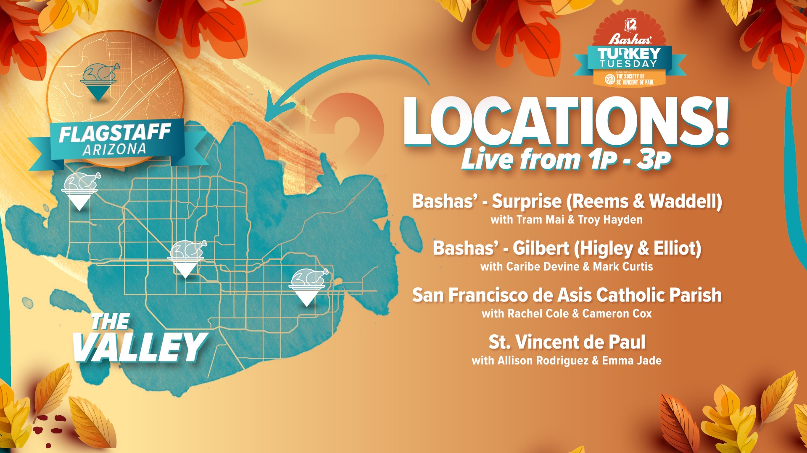
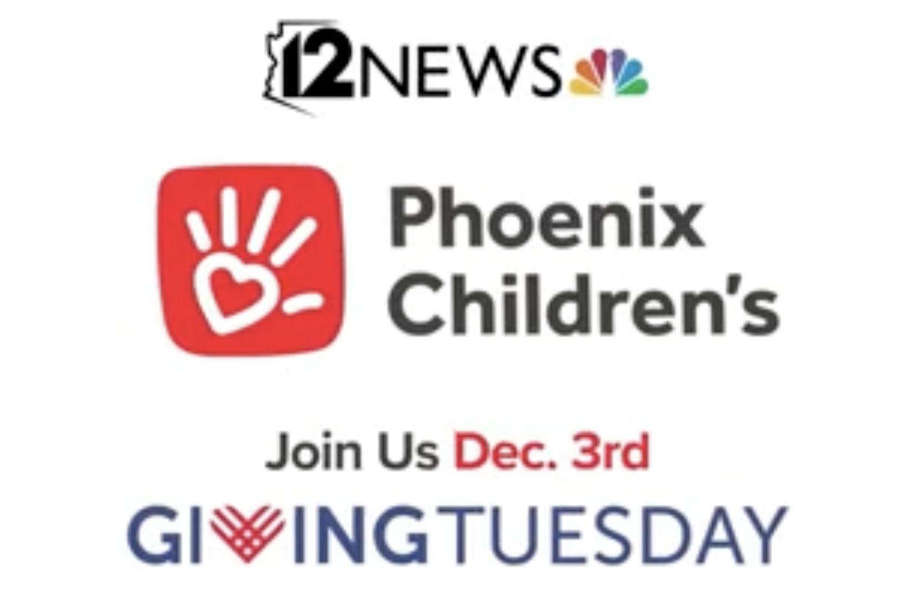

November 26, 2024
12News, Bashas' and St. Vincent de Paul partnered with the largest one-day turkey drive in Arizona. Joining forces to feed families and communities throughout the holiday season and beyond. 12News was live for more than 7 hours of coverage from four different locations around the state all at the same time.


12News, United Food Bank, Fry's Food Stores and many others came together to fill the shelves at United Food Bank. No child should suffer from food insecurity. This three month campaign successfully raised more than $750K.

12News and Central Arizona Shelter services partnered together to help raise $100,000 in one day, for those experiencing housing insecurity.
January 22, 2024-March 26,2024

12News responds to the rampant wave of teen violence after a young man, Preston Lord is beaten and died after a Halloween party, by creating a safe forum for the community to speak up about their fear and concern. This led to two more town halls, one in spanish for our hispanic audience.

12News and Branching Out Family services partnered on an awareness campaign highlighting The Good Works Project. A division of the company providing a visit from Santa, gifts, and other much needed items to Arizona's most vulnerable foster children.

12News and Phoenix Children's partner annually for Giving Tuesday. In 2024 Phoenix Children's campaign focus was 'The Gift' providing Hope to families who are struggling with unimaginable hardship due to health challenges. This promo builds on that showing audiences how to help this season.

12News, Phoenix Children's and the Cardinals teamed up to promote Giving Tuesday 2022. This year's campaign focused on the Triple Match, and showing the audience how to support by donation.